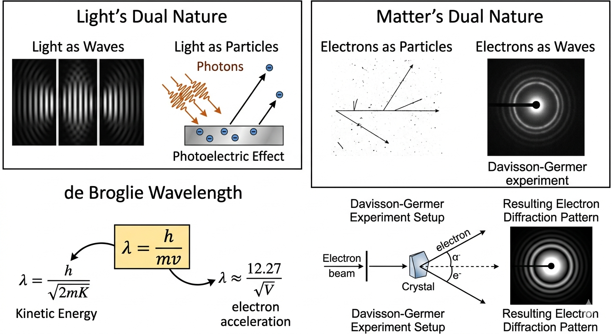

Wave-Particle Duality: Concept, Examples, and Shortcuts

Image generated by Google AI
What Is Wave-Particle Duality?
Wave-particle duality is a fundamental idea from early 20th-century physics. It tells us that very small things like light and electrons don’t behave strictly like particles or waves, they actually show properties of both. This was quite surprising because, in classical physics, waves and particles were treated as completely different things.
For example, light was originally understood as a wave because it shows effects like interference and diffraction. But Einstein’s 1905 explanation of the photoelectric effect showed something unexpected, light can also behave like a stream of particles. In this case, light transfers energy in small packets called photons, instead of in a continuous way.
In 1924, Louis de Broglie took this idea a step further. He suggested that if light (which we thought was a wave) can behave like a particle, then matter (which we think of as particles) should also behave like waves. This idea brought a kind of symmetry between matter and radiation.
This wasn’t just a theory, it was confirmed experimentally. The Davisson-Germer experiment showed electron diffraction, which is something only waves are supposed to do. Since electrons produced a diffraction pattern, it was clear they also have wave-like behavior.
So, according to this idea, every moving particle has an associated wavelength, called the de Broglie wavelength, given by
\[ \lambda = \frac{h}{p} = \frac{h}{mv}, \]
Here, \(h\) is Planck’s constant, \(m\) is mass, and \(v\) is velocity. This equation tells us that all moving particles have a wave nature—but we only notice it at very small (microscopic) scales because \(h\) is extremely small.
Understanding this dual nature is essential in quantum mechanics and atomic physics. It helps explain things that classical physics simply cannot, like how electrons exist in orbitals or how particles can tunnel through barriers.
de Broglie’s Formula (Core Concept)
\[ \lambda = \frac{h}{mv} \]
This is the key formula that connects particle properties (mass and velocity) with wave behavior (wavelength). In simple terms, it tells us that wave behavior is not something special only for light—it's actually a general property of all matter.
Where:
- \( \lambda \): de Broglie wavelength
- \( h = 6.626 \times 10^{-34} \, \text{J·s} \)
- \( m \): particle mass
- \( v \): particle velocity
One important takeaway: heavier or faster particles have smaller wavelengths. That’s why we don’t see wave behavior in everyday objects (like a cricket ball), their wavelengths are just too small to detect.
Shortcut Formulas for Different Cases
Depending on what information is given in a problem, the de Broglie wavelength can be written in different forms. These shortcuts are very useful in exams because they save time.
- With velocity \( v \): \( \lambda = \frac{h}{mv} \)
- With momentum \( p \): \( \lambda = \frac{h}{p} \)
- With kinetic energy \( K \): \( \lambda = \frac{h}{\sqrt{2mK}} \)
- Electron accelerated by potential \( V \): \( \lambda = \frac{h}{\sqrt{2meV}} \)
- Electron shortcut in Ångströms: \( \lambda(\text{Å}) \approx \frac{12.27}{\sqrt{V}} \)
Once you get comfortable with these forms, you can quickly identify which one to use without going through full derivations every time.
Examples
Let’s look at a few quick examples to see how wavelength depends on different quantities:
-
Electron accelerated by 150 V:
When an electron is accelerated through a potential difference, it gains kinetic energy equal to \( eV \). This directly determines its wavelength.
\[ \lambda = \frac{12.27}{\sqrt{150}} \approx 1.0 \, \text{Å} \]
- Electron vs proton at same kinetic energy: Electron wavelength is larger due to smaller mass. Since wavelength varies inversely with the square root of mass, lighter particles show more noticeable wave behavior.
-
KE increases 4 times:
Because wavelength depends on the inverse square root of kinetic energy, increasing energy reduces wavelength, but not linearly.
\[ \lambda \propto \frac{1}{\sqrt{K}} \Rightarrow \lambda' = \frac{\lambda}{2} \]
-
Speed doubles:
Here the relationship is simpler—wavelength is directly inversely proportional to velocity.
\[ \lambda \propto \frac{1}{v} \Rightarrow \lambda' = \frac{\lambda}{2} \]
Concept Questions with Explanations
These are more about understanding the relationships than doing long calculations. If you remember the proportionalities, you can answer them quickly.
- If KE becomes 16 times, wavelength becomes \( \frac{1}{4} \) because \( \lambda \propto \frac{1}{\sqrt{K}} \).
-
Which experiment proves wave nature of electrons?
Answer: Davisson-Germer experiment (electron diffraction confirms wave behavior). Diffraction patterns are a clear sign of wave nature. -
Which experiment proves particle nature of light?
Answer: Photoelectric effect (light ejects electrons as particles). This result cannot be explained using classical wave theory. -
At same KE, who has larger \( \lambda \) — electron or proton?
Answer: Electron, since lighter mass means larger wavelength. -
Wavelength of electron with 100 eV energy:
Using the shortcut formula makes this very quick to calculate.
\[ \lambda \approx \frac{12.27}{\sqrt{100}} = 1.227 \, \text{Å} \]
Super Tips for Solving Fast
A few quick tips that can save you time in exams:
- Use \( \lambda = \frac{12.27}{\sqrt{V}} \) (Å) directly for electrons accelerated by voltage \( V \).
- Always remember: lighter particles → larger wavelength.
- Convert voltage into kinetic energy using \( K = eV \) when needed.
- Stick to consistent units (preferably SI) to avoid mistakes.
With a bit of practice, you’ll start spotting patterns and solving many of these questions mentally.
Previous Year Questions (PYQs)
(JEE 2025 Mains)
An electron is released from rest near an infinite non-conducting sheet of uniform charge density \(\sigma\). The rate of change of de-Broglie wavelength associated with the electron varies inversely as the \(n^{th}\) power of time. The numerical value of \(n\) is ______.
Solution:
Step 1: The electric field near the sheet is
\[ E = \frac{\sigma}{2\epsilon_0}. \]
Step 2: Electron acceleration:
\[ a = \frac{eE}{m} = \frac{e\sigma}{2m\epsilon_0}. \]
Step 3: Velocity after time \( t \):
\[ v = at = \frac{e\sigma}{2m\epsilon_0} t. \]
Step 4: de Broglie wavelength:
\[ \lambda = \frac{h}{mv} = \frac{h}{m a t} \propto \frac{1}{t}. \]
Step 5: Rate of change of wavelength:
\[ \frac{d\lambda}{dt} \propto \frac{d}{dt} \left( \frac{1}{t} \right) = -\frac{1}{t^2}. \]
Hence, the rate varies inversely as \(t^2\), so \(n=2\).
Answer: \( \boxed{2} \)